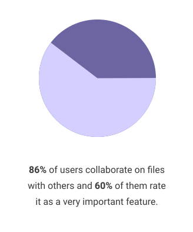
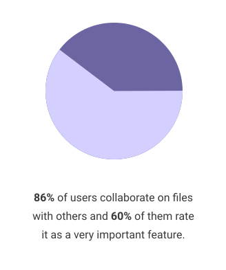

This was the capstone project for my UI/UX Bloc apprenticeship design program, we were given the creative freedom to tackle any problem we wanted to so I wanted to work on something that meant a lot to me. In order to increase the accessibility of rock climbing resources among the climbing community, I created The Climbing Beta.
UX Research, Content Strategy, UI Design, User Testing
User surveys, Competitive analysis, User personas, User stories, User flows, Wireframes, High-fidelity mockups, Clickable prototypes
Adobe Photoshop, Figma, InVision, UsabilityHub, GitHub, Google Forms
2 months
Climbing is largely considered to be a friendly and social sport with great communities, but a problem I've noticed is that people are having a hard time finding popular climbing routes and gyms while visiting new or unfamiliar areas.
Why is there no easy way to share knowledge about great outdoor climbs or indoor gyms?
Having experienced this problem myself and being an avid and passionate member of the rock climbing community, I decided this was a problem that I wanted to use my design skills to tackle.
Enter The Climbing Beta. The Climbing Beta gives users a solution for searching for climbing routes and gyms in areas they might not be familiar with.
Because the reviews and information given are 100% crowd-sourced, users get the benefit of utilizing different local communities for honest and reliable reviews.


 

Using the data gathered from the survey, we created 3 types of potential user personas: The Local, The Traveler, and The Googler.
A summary of The Local and The Traveler tiers are shown below.

Type: The Local
Age: 23
Occupation: Grad Student
Location: Austin, TX
"I don't take advice from a gray avatar."
As a seasoned climber and internet sketpic, Maddy's weary of online reviews.
She usually relies on word of mouth suggestions when looking for new routes, gyms, or other local recommendations.
Type: The Traveler
Age: 34
Occupation: Software Engineer
Location: Seattle, WA
"I'll try most things at least once!"
Jeevan loves to travel when he isn't busy fixing coding issues.
Being a fairly curious person, he welcomes the opportunity to experience new things and places.
We conducted a competitive analysis between the largest cloud storage services with features similar to what potential users wanted to see in the app.

Based on previous research and user personas, we came up with different user stories for the application and ranked them based on importance. These are the tasks with the highest importance and the ones deemed necessary for a MVP (minimum viable product).

Create an account flow

Contact event guests, upload photos, and edit event details flows

Create an event and invite contacts flows
In our first iterations, we needed to map out screens that included the following content:

Dashboard, create event, and create message screen initial sketches
Using the sketches above, as well as other influences of popular applications, we created our first iteration of digital wireframes.
Some screen inspirations came from Yelp, Patagonia, and Mountain Project.

Digital wireframes of dash, create event, and message screens
During the first round of user testing, we received valuable feedback that we used to improve our designs for the second round of iterations.
The Climbing Beta's main purpose is to help users find potential climbing routes and gyms through crowd-sourced reviews.
We started the branding process by thinking about the process of climbing and breaking it down into its simplest form - hands, rock, and chalk (sometimes).
Brainstorming and moodboard photos
The logo embodies all that The Climbing Beta is in its simplest form - bold and straightforward.
Something about confidence in the site and the information it provides to its users.
Brainstorming and moodboard photos


Typography here
While brainstorming for Primary colors, we came across this description "Blue is strongly associated with feelings of trust, dependability, and calmness" which are all things we want the site to inspire in it’s design to the users. We decided to go with a mixture of a monotone and triad color scheme - incorporating cool grays and blacks as secondary colors for support.

The first preference test was for the label name for the “Feed” tab. Some users mentioned that the word “feed” was too similar to the home page in connotation.
There were two proposed label names put forth for testing - Activity and News.


89% of testers preferred the label "Activity" instead of "News" and some reasons were that:
"The word 'News' can carry a more serious connotation, like a feed of current events or trending topics - things outside the scope of notifications"
"Activity sounds more personal than 'News'"
The next preference test was for the addition of small profile icons of guests that are attending an event versus an event home page with just a link to view the guest list.


88% of testers preferred an event homepage with the added profile icons, stating that:
"I like having visuals of who is coming to the event"
"My eyes are drawn to the avatars"
"Seeing real people's pictures can help drive the RSVPs"
In the first high fidelity mockup for the event page, there was an idea to maintain a sense of movement within the app by adding an organic circular shape to the top of the screen which can be seen in many other screens throughout the app.
After consulting with other team members and conducting some user tests, we decided to remove the solid shape as it seemed to create a feeling of separation within the content on the page. Instead, we used the circular shape as a mask for the event hero photo, therefore still incorporating an organic sense of movement within the page without the added distraction.

Event page iterations 1-3
In the early versions of this app, user testing revealed that the hamburger side menu might not be as intuitive for users who are not familiar with the feature.
As a way to remedy this, we added a quick on-boarding overlay that informs the user of the existence of a side-menu when they first create an account.
We also removed menu options that felt out of place being in the side menu such as “Invite Contacts” and “Sync Calendar”.
Side menu iterations 1-3
Being the sole designer responsible for the entirety of a project from conception to delivery took herculean efforts and meant letting go of a lot of perfectionistic tendencies.
The journey of let’s eat is a tale fraught full of scope creep issues, questions about logo branding and identity, and endless iteration in order to solve the problem of the difficulties associated with dinner planning. Users liked how clean the UI looked and navigating the application was very intuitive.
Given more time and love, this application would likely explore features such as external calendar syncing and the ability to create to-do lists and assigning tasks to event attendees.